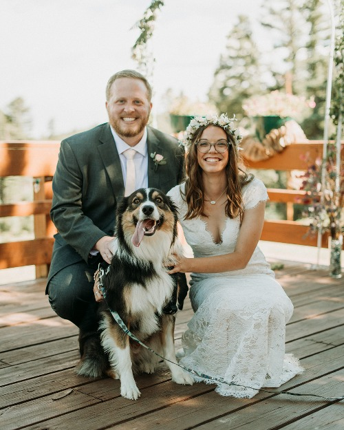

Hello!

My name's Will Reynolds and I am a front-end
developer located in Colorado Springs, CO. With the pandemic, I have
taken the extra time at home to learn some new skills, in hopes
of finding a full-time job as a web developer! Through online resources,
such as SkillShare and Linkedin Learning, I have been able to learn HTML,
CSS, and vanilla JavaScript. With the basics of web development down, I
have been searching for a front-end developer job, while I continue to
learn more web development skills.
More about me personally, I graduated from Dallas Baptist University in 2017.
I worked in Dallas for a year after graduating, but then got a job in
Westcliffe, CO in 2018. I worked in Westcliffe for a year, where I also
met my wife, Brittany. We dated long distance for awhile before deciding
to not only get married in Colorado, but to move up here too! In a crazy
week, my wife and I moved to Colorado Springs and got married this past
September where it's us and our Australian Shepherd, Baxter! We enjoy
hiking, reading, coffee, podcasts, and safely exploring our new town.